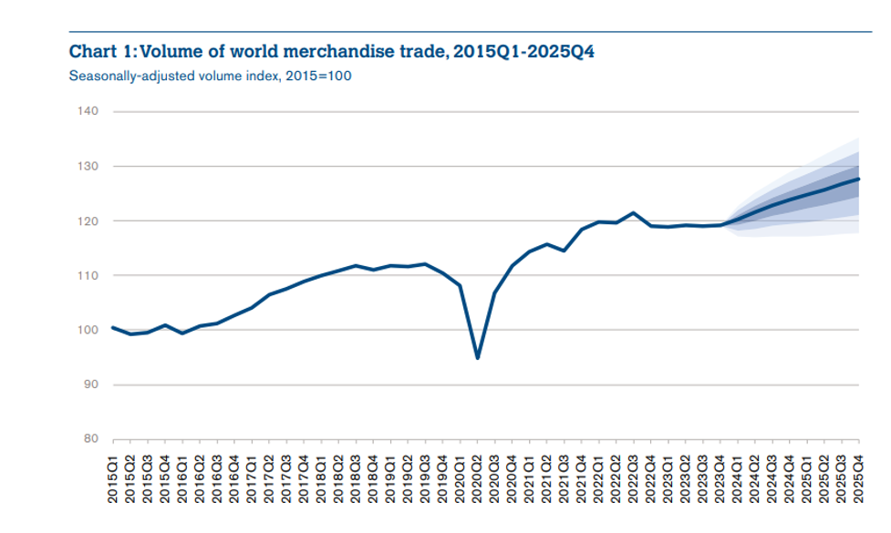

Building Smarter Customs: A Data Analytics and AI Perspective

Global trade has undergone a remarkable transformation in recent years. Merchandise trade volumes have steadily increased since 2015 and have been forecasted to grow in future years, showcasing the resilience of global trade systems. The sharp V-shaped recovery following the disruptions caused by COIVD 19 emphasizes how adaptable these systems have become, largely due to advancements in technology and data-driven decision-making.  Figure Source: World Trade Organization (2024), Global Trade Outlook and Statistics
Modern customs authorities must adapt to the complexities of increased trade flows while ensuring efficiency, security, and compliance.
The Data Challenge in Modern Customs
With global e-commerce surpassing $1 trillion annually and air passenger traffic recovering rapidly, customs administrations are inundated with data from multiple sources. Effectively leveraging these data streams is critical for meeting operational demands.
Key Customs Data Sources
Customs authorities process massive volumes of information generated across multiple domains, including:
- Import and Export Declarations: Containing detailed information about goods, parties involved, and declared values.
- Cargo Manifests: Providing logistics and carrier details critical for tracking shipments.
- Advanced Passenger Information (API) & Passenger Name Records (PNR): Enabling effective risk assessment of travelers.
- LPCO: License, Permit, Certificate, and Other Approvals,Supporting trade facilitation and regulatory compliance.
- Historical Compliance Records and Enforcement Data: Enhancing risk profiling and fraud detection.
- Commercial Invoices & Payment Information: Offering transparency in financial transactions.
- Supply Chain Documentation & Tracking Data: Helping customs track goods across borders.
Customs operations must harness these diverse data streams to uncover actionable insights while managing the growing complexity of international trade.
Building a Smarter Data Ecosystem
As data complexity increases, the ability to store, process, and analyze data becomes a key challenge. Advanced technologies like data lakes have emerged as a flexible solution, accommodating structured, semi-structured, and unstructured data. Data governance, security, and scalability are vital for building a reliable ecosystem to support customs operations.
Leveraging Advanced Analytics and AI
Advanced analytics and artificial intelligence (AI) are transforming customs operations, offering:
- Real-Time Risk Assessment: AI-powered risk scoring systems for fraud detection and predictive analytics.
- Automated Document Processing: Tools like OCR and natural language processing (NLP) for faster, more accurate trade document reviews.
- Valuation and Classification: Automated HS code classification and verification systems using machine learning.
- Smart Audit Systems: Risk-based audit selection and compliance monitoring using data analytics.
Leading Innovations by the World Customs Organization (WCO)
The WCO is at the forefront of technological adoption in customs. Key initiatives include:
- AI-Powered HS Classification Systems: Automating the classification of goods for customs duties.
- Fraud Detection Models (DATE): Identifying patterns and anomalies in trade data.
- Advanced X-Ray Image Analysis: Using AI for accurate detection of contraband in cargo inspections.
- Smart Customs Projects: Addressing member countries’ technological challenges through innovative solutions.
The Path Forward
The intelligent integration of these technologies will shape the future of customs management. For successful implementation, customs administrations need to focus on:
- Robust Data Strategies: Including standardization, secure sharing protocols, and governance frameworks.
- Technology Integration: Scalable systems that are secure and user-friendly.
- Workforce Development: Upskilling staff in analytical techniques, AI tools, and data management.
Conclusion
The transformation of customs through data analytics and AI is not just a response to the increasing complexity of trade but a proactive step toward building smarter, more adaptive systems. These advancements will enable customs administrations to streamline processes, enhance security, and maintain compliance. As global commerce continues to evolve, customs administrations must remain at the forefront of innovation. The ability to harness emerging technologies and leverage diverse data sources will be the cornerstone of efficient and effective border management in the years to come.
Mohan Kumar Pudasaini
WCO Accredited Expert
Risk Management || Data Analytics
Passionate about utilizing data to uncover valuable insights and drive actionable outcomes.